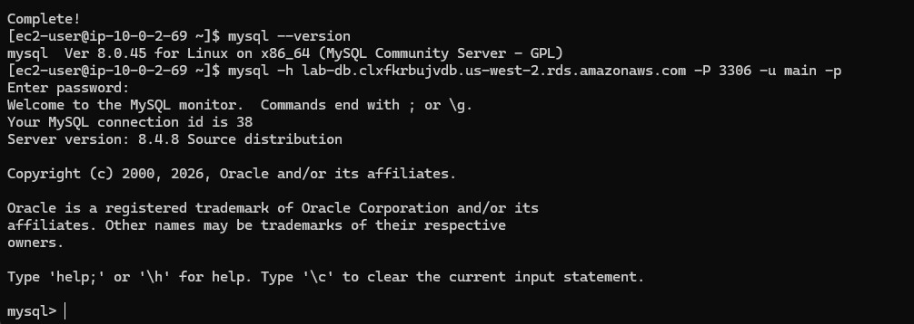
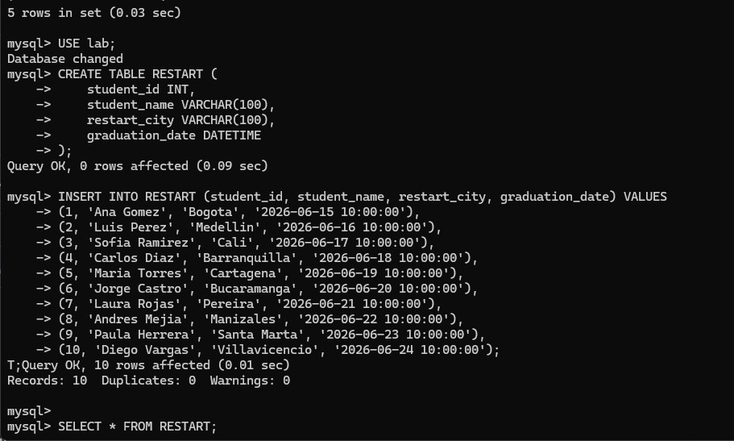
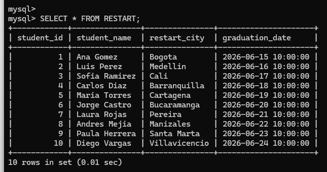
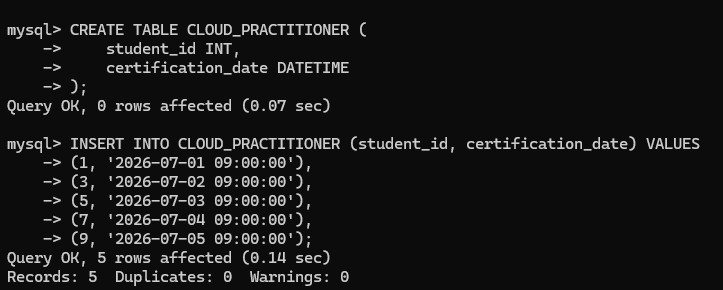
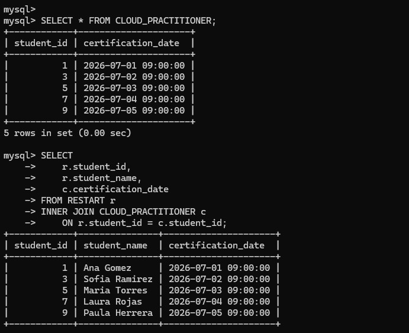

Client Connection
Verified the MySQL client on the LinuxServer and connected to the RDS endpoint with the lab credentials.
This challenge lab uses Amazon RDS and a LinuxServer to create and query a custom schema. The exercise creates two tables, inserts sample data, verifies the rows, and joins both tables to combine student and certification information.
Launched an RDS instance, connected from the LinuxServer using the MySQL client, created the RESTART and CLOUD_PRACTITIONER tables, inserted sample rows, queried each table, and finished with an INNER JOIN that combined student IDs, names, and certification dates.
Verified the MySQL client on the LinuxServer and connected to the RDS endpoint with the lab credentials.
Built two custom tables and populated them with sample data for the challenge.
Queried both tables separately and then combined them with an inner join to produce a single result set.
This challenge emphasized doing the full path yourself: create the database connection, define the schema, insert data, and then query it meaningfully.
mysql --version, and opened a session to the endpoint using mysql -h ... -P 3306 -u main -p.
lab database with USE lab;.RESTART table with the columns student_id, student_name, restart_city, and graduation_date.SELECT * FROM RESTART; to confirm the ten inserted records.
RESTART table is created, ten sample rows are inserted, and the first query confirms that the data load succeeded.RESTART with SELECT * FROM RESTART;.
RESTART table shows the ten inserted rows with the student, city, and graduation date columns fully populated.CLOUD_PRACTITIONER table with the columns student_id and certification_date.
CLOUD_PRACTITIONER table is created and filled with five certification records tied to selected student IDs.SELECT * FROM CLOUD_PRACTITIONER; to confirm the five certification rows.INNER JOIN between RESTART and CLOUD_PRACTITIONER on student_id.student_id, student_name, and certification_date in the final result set to show only the students present in both tables.
CLOUD_PRACTITIONER rows are verified first, then the INNER JOIN returns the shared students together with their certification dates.Main commands and SQL statements used to create the schema and join the resulting tables.
mysql --versionChecks that the MySQL client is installed on the LinuxServer.
mysql -h <endpoint> -P 3306 -u main -pConnects from the LinuxServer to the RDS instance through the MySQL client.
CREATE TABLE RESTART (...)Defines the student table with ID, name, city, and graduation date columns.
INSERT INTO RESTART (...) VALUES (...)Loads the sample student rows into the RESTART table.
CREATE TABLE CLOUD_PRACTITIONER (...)Defines the second table used to store certification dates.
SELECT * FROM CLOUD_PRACTITIONER;Displays the certification rows before the join.
INNER JOIN CLOUD_PRACTITIONER c ON r.student_id = c.student_idCombines both tables and keeps only the rows that exist in both datasets.
INNER JOIN returns only the shared keys between two tables, which makes it useful for combining related datasets without including unmatched rows.This challenge lab was more complete than a simple query exercise because it joined infrastructure and data work in the same flow. The database had to exist, be reachable, contain the right tables, and then return meaningful joined data.
The final join was the clearest proof that the schema was usable. It showed that the tables were not only created correctly, but also related in a way that allowed the student and certification information to be queried together.